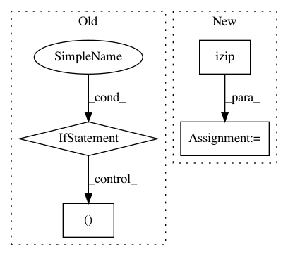

5e3cd5a9f1dfc0e320d3ff5a384505bf06904365,nilearn/plotting/displays.py,BaseSlicer,_map_show,#BaseSlicer#Any#Any#,423
Before Change
xmin_, xmax_, ymin_, ymax_, zmin_, zmax_ = \
xmin, xmax, ymin, ymax, zmin, zmax
if hasattr(data, "mask") and isinstance(data.mask, np.ndarray):
not_mask = np.logical_not(data.mask)
xmin_, xmax_, ymin_, ymax_, zmin_, zmax_ = \
get_mask_bounds(nibabel.Nifti1Image(not_mask.astype(np.int),
affine))
if kwargs.get("vmin") is None or kwargs.get("vmax") is None:
// Avoid dealing with masked arrays: they are slow
if not np.any(not_mask):
// Everything is masked
vmin = vmax = 0
else:
masked_map = np.asarray(data)[not_mask]
vmin = masked_map.min()
vmax = masked_map.max()
if kwargs.get("vmin") is None:
kwargs["vmin"] = vmin
if kwargs.get("vmax") is None:
kwargs["vmax"] = vmax
else:
if not "vmin" in kwargs:
kwargs["vmin"] = data.min()
if not "vmax" in kwargs:
kwargs["vmax"] = data.max()
bounding_box = (xmin_, xmax_), (ymin_, ymax_), (zmin_, zmax_)
// For each ax, cut the data and plot it
ims = []
After Change
bounding_box = (xmin_, xmax_), (ymin_, ymax_), (zmin_, zmax_)
ims = []
to_iterate_over = itertools.izip(self.axes.itervalues(), data_2d_list)
for display_ax, data_2d in to_iterate_over:
if data_2d is not None:
im = display_ax.draw_2d(data_2d, data_bounds, bounding_box,
type=type, **kwargs)
In pattern: SUPERPATTERN
Frequency: 3
Non-data size: 4
Instances
Project Name: nilearn/nilearn
Commit Name: 5e3cd5a9f1dfc0e320d3ff5a384505bf06904365
Time: 2014-12-04
Author: loic.esteve@ymail.com
File Name: nilearn/plotting/displays.py
Class Name: BaseSlicer
Method Name: _map_show
Project Name: etal/cnvkit
Commit Name: 1edd1496383e7ae0374ec5dd8b455d58077e1d62
Time: 2016-10-30
Author: eric.talevich@gmail.com
File Name: cnvlib/_merge.py
Class Name:
Method Name: _merge_overlapping
Project Name: dit/dit
Commit Name: 37b54afef51c7430f8fa00db2f07e3532a7408da
Time: 2013-10-01
Author: chebee7i@gmail.com
File Name: dit/distribution.py
Class Name: BaseDistribution
Method Name: zipped